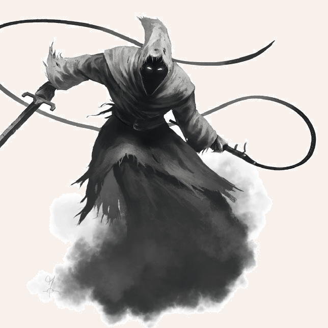

Rot glühende, blutnebeldampfende Augen und triefende, eitergelbe Krallenhände, die Krummschwert und Peitsche gegen die Feinde der Finsternis führen, sind das Einzige, was unter der schweren schwarzen Kutte des Heshthot auszumachen ist. Und das auch nur, wenn man das Unglück hat, ihm zu nahezukommen. Ansonsten scheint er aus tiefster Dunkelheit zu bestehen, die entweder vom Willen seines Beschwörers oder von Blakharaz selbst, dem Herrn der Rache, aus dessen Gefolge er stammt, angetrieben wird.

Verbreitung
Heshthotim kommen für gewöhnlich weder natürlich noch ungebeten vor.
Wenn sie sich in der dritten Sphäre aufhalten, dann meist in der Nähe verfluchter Orte oder in Gesellschaft ruchloser Beschwörer.
Lebensweise
Ob einzeln oder in kleinen Gruppen, Unheil und Vernichtung von Körper und Seele, sind für gewöhnlich Sinn und Zweck der zeitweiligen Abberufung eines oder mehrerer Heshthotim aus den Niederhöllen.
Für den Kampf sind sie geschaffen, für den Kampf werden sie gerufen, wenngleich ihnen das offene Gefecht weniger liegt als der hinterhältige Mordanschlag.
Heshthot
Größe: bis 2,00 Schritt Spannweite
Eigenschaften:
MU 16
KL 12
IN 14
CH 12
FF 13
GE 13
KO 15
KK 15
LeP: 35
AsP: 35
AW: 7
INI: 15+1W6
SK: 2
ZK: 3
GS: 9
VW: 0
Waffenlos:
AT: 12
PA: 6
TP: 1W6+1
RW: kurz
Heshthot-langschwert*:
AT: 16
PA: 8
TP: 1W6+5
RW: lang
Heshthot-Peitsche**:
AT: 16
TP: 1W6+1
RW: lang
Aktionen: 2 (max. 1 x Heshthot-Langschwert, max. 1 x Heshthot-Peitsche, max. 2 x Waffenlos)
Vor- und Nachteile: Dunkelsicht II
Sonderfertigkeiten: Finte I+II, Haltegriff, Schildspalter(kann nur mit dem Heshthtot-Schwert ausgeführt werden), Vorstoß, Wuchtschlag I+II
Talente:
Körperbeherrschung 7 (13/13/15),
Kraftakt 8 (15/15/15),
Selbstbeherrschung - (gelingt automatisch),
Sinnesschärfe 9 (12/14/14),
Verbergen 10 (16/14/13),
Einschüchtern 12 (16/14/12),
Willenskraft - (gelingt automatisch)
Anzahl: 1 oder 1W3+2 (Dämonenhorde)
Größenkategorie: mittel
Typus: Dämon (niederer, Blakharaz), humanoid
Kampfverhalten: Wenn er die Gelegenheit hat, wird ein Heshthot gegen mehrere Gegner wzuerst seine Zauberkraft anwenden und Dunkelheit erzeugen.
Anschließend wird er versuchen, seine Gegner abwechselnd mit Schwert und Peitsche anzugreifen.
Zu Beginn greift er sehr willkürlich seine Gegner an.
Sobald er verletzt wurde, wird er rachsüchtig reagieren und diesen Gegner bevorzugt angreifen.
Flucht: -
Zauber: Dunkelheit 15, Horriphobus 6
Anrufungsschwierigkeit: -3
Beute: keine
Sonderregeln: * Wird mit einer Waffe der Angriff des Schwertes pariert, bricht sie bei einer 19 oder 20 auf einem W20, so sie nicht unzerbrechlich ist.
** Erzielt der Heshthot mit der Peitsche SP, erhält sein Opfer pro Treffer eine Stufe Schmerz bis zum nächsten Sonnenaufgang.
| LeP-Verlust | Schmerz | |
|---|---|---|
| 27 LeP (¾) | +1 Schmerz | |
| 18 LeP (½) | +1 Schmerz | |
| 9 LeP (¼) | +1 Schmerz | |
| 5 LeP und weniger | +1 Schmerz |
| Sphärenkunde | ||
|---|---|---|
| QS1 | Als Dämonen aus dem Gefolge des Blakharaz sind sie mit dem Praios heiligen Waffen zu verletzen. Außerdem meiden sie direktes Sonnenlicht. | |
| QS2 | Der Heshthot kann eine unnatürliche Dunkelheit hervorrufen, durch die er große Vorteile genießt. | |
| QS3 | Manche Heshthotim verwenden auch Waffen wie Henkersbeile oder Ketten. |